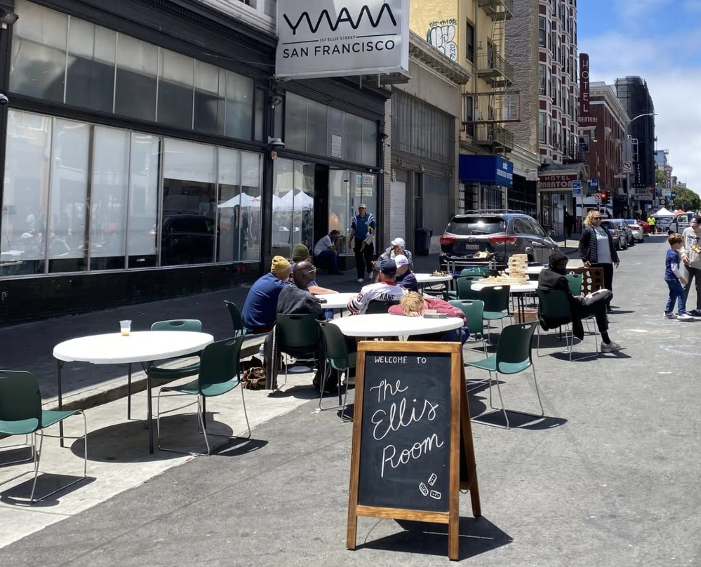
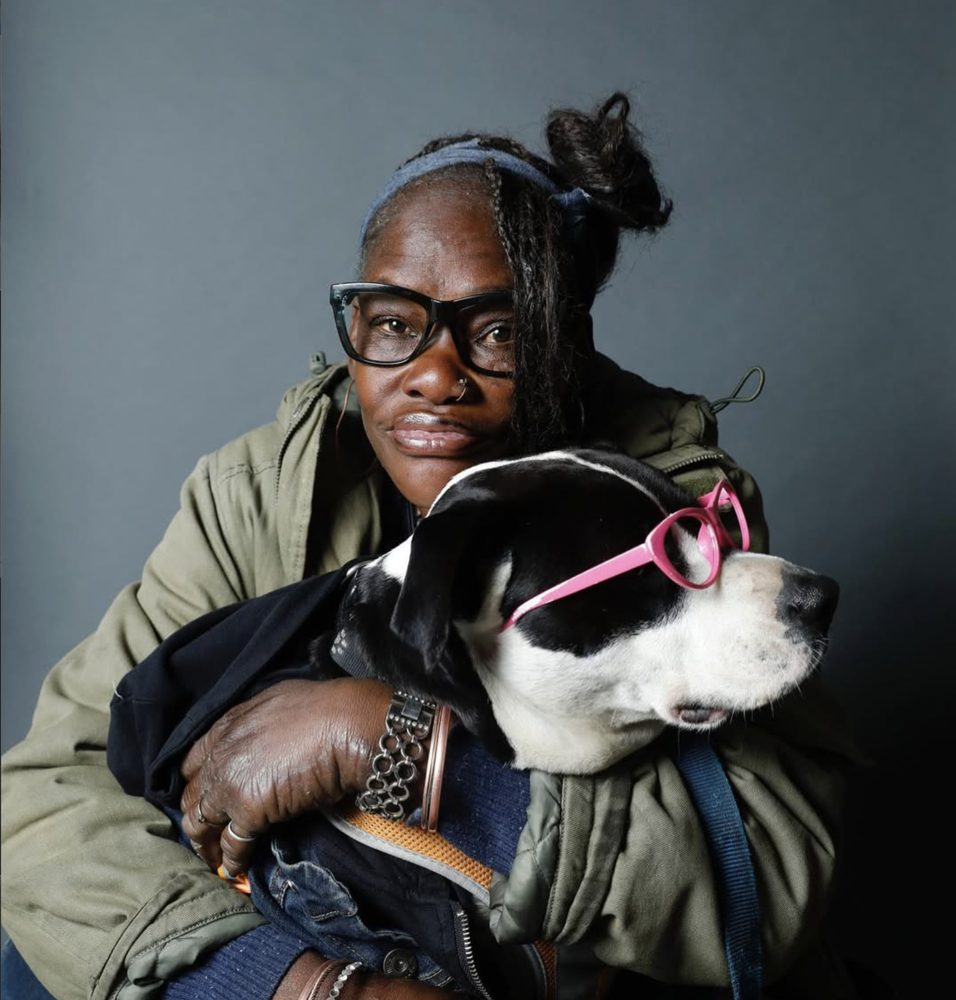
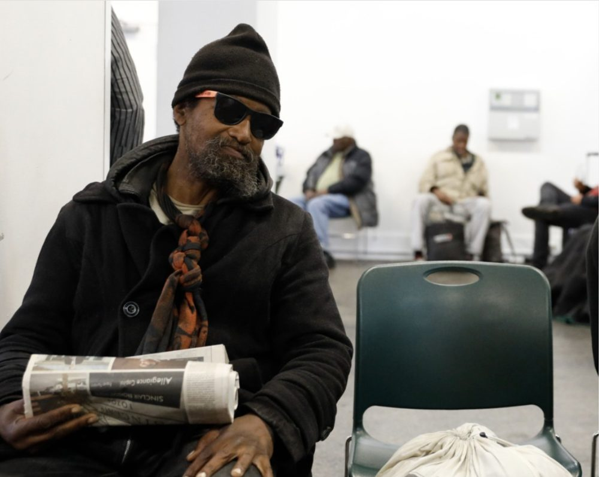
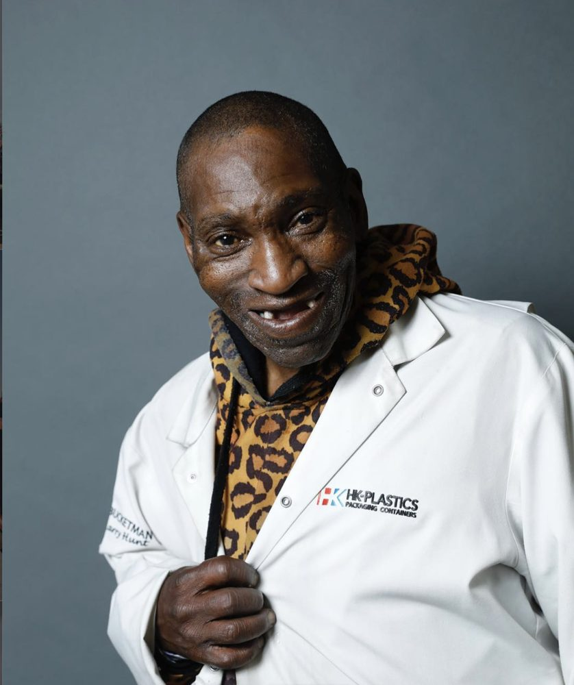
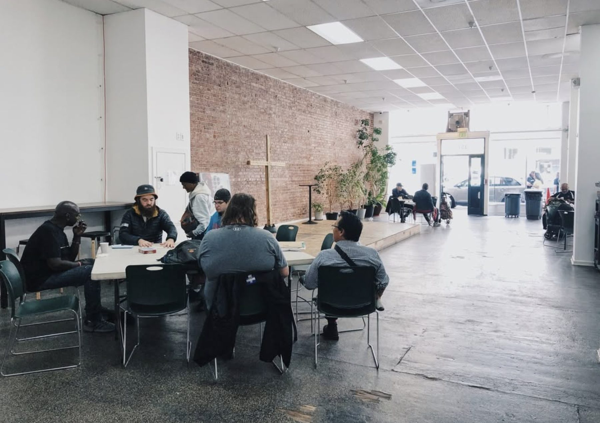
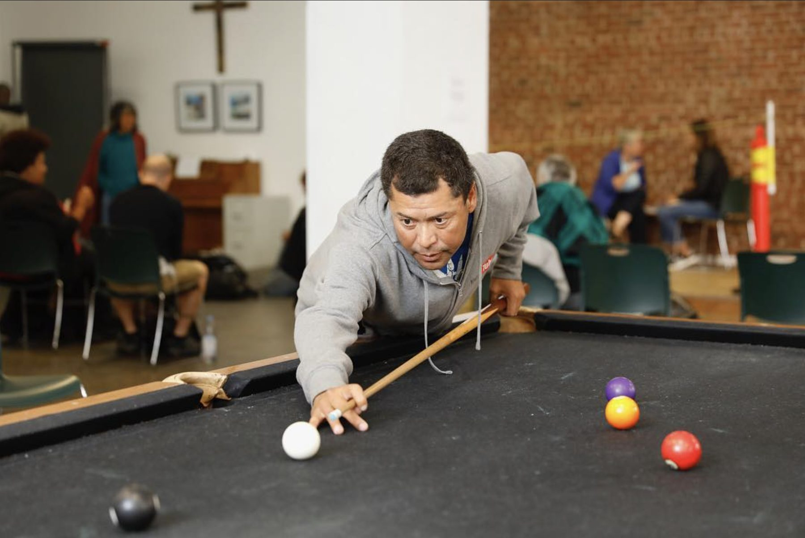
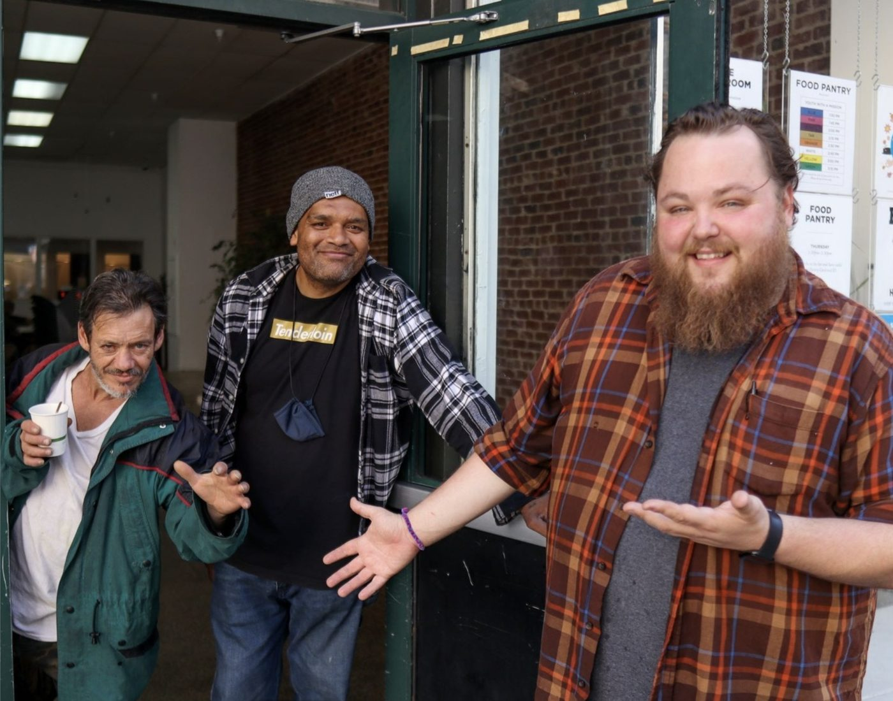

Building relationships that lead to lasting transformation.
God is restoring, empowering and serving in our neighborhood, and we’re following His lead.
Everyone has value. Everyone has a place. Everyone has something to give, and everyone has something to receive.
Restore. Empower. Serve.

i.Restore
Tap to readOur heart is for people to be restored to God, their families and others: restored dignity and restored identity.

ii.Empower
Tap to readWe equip people with tools for a stable life, to pursue work, employment and housing, and to be their true selves.

iii.Serve
Tap to readFirst by being good listeners. Free haircuts, showers and prayer. We go with people to the hospital, court and rehab.
Come by. The door is open.
The proclamation of the Gospel and the activity of the Gospel, side by side. Today, and anything happening right now, is highlighted in San Francisco time.
Mon
Tue
Wed
Thu
Fri
Sat
Sun
Lessons learned on these streets.
“…choose hurry instead of human in these moments.”Restaurants of the TLFrom the YWAM SF blog
“…seeking out God’s beauty amidst the chaos of daily life.”Arts and MuralsFrom the YWAM SF blog
“…see and understand my neighbors at a much deeper level.”Karol SvobodaFrom the YWAM SF blog
“He shows up. Will you?”Seniors of the TenderloinFrom the YWAM SF blog
“…it’s an honor to walk side by side with these visionaries.”The Youth of the TenderloinFrom the YWAM SF blog




“A gospel that does not deal with the issues of the day is not the gospel at all.”
Quoted on our restoration page
Volunteer with usThe food pantry, every Thursday.
We partner with the SF-Marin Food Bank. Sign-ups happen on site at 357 Ellis Street, Thursdays at 3:30 pm. We serve residents of the 94102 zip code: bring an ID with your current address, or your ID and a recent piece of mail.
Need food right away? Visit the SF-Marin Food Bank or call 211.


Join what God is already doing here.
Serve a shift, give toward showers and groceries, or bring a team.